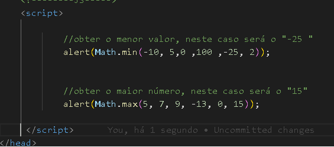

Máximo e Mínimo
Para obter o menor ou maior valor de determinados produtos,
Vai pegar os valores maiores ou menores, por exemplo de um banco de dados.
Usaremos o "Math" com suas funções "min, max":
Math.min => vai mostrar o menor número .
Math.max => vai mostrar o maior número .
Você pode usar um vetor => banco de dados "temporário" ou
você também pode passar os valores como parâmetros, dentro do "()".
Math.min( -10, 5, 0 , 100 , -25, 2 )
Math.max( 5, 7, 9, -13, 0, 15 )
Vamos colocar dentro do "alert" para ser exibido na caixa de mensagem:
alert( Math.min( -10, 5, 0 , 100 , -25, 2 ) );
alert( Math.max( 5, 7, 9, -13, 0, 15 ) );
Exemplo de código:
Abra a tag "script", dentro dela coloque:
//obter o menor valor, neste caso será o "-25 "
alert( Math.min( -10, 5, 0 , 100 ,-25, 2 ) );
//obter o maior número, neste caso será o "15"
alert( Math.max( 5, 7, 9, -13, 0, 15 ) );
Fecha a tag "/script"
Veja como é o código:

Agora veja como seria, clicando no botão abaixo:
Exibir valor máximo => ( 5, 7, 9, -13, 0, 15 ) :
Exibir valor mínimo => ( -10, 5, 0 , 100 ,-25, 2 ):